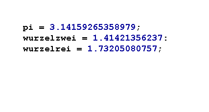

In diesem Kapitel lernst du einige Tipps kennen, die dir beim Programmieren helfen werden.
Inhalt:
Kommentare in Programmen
Auskommentieren
Klammern und Anführungszeichen
Einrücken
Aussagekräftige Namen
Wenn du selbst Programme schreibst, solltest du bei komplizierten Befehlen erklären, was sie genau tun. Am besten schreibt man einen kleinen Kommentar dazu.
Kommentare sind kurze Texte im Code, die nicht interpretiert werden.
Einzeilige Kommentare schreibt man so:
Ein Kommentar über mehrere Zeilen kann mit /* begonnen und mit */ beendet werden.
Kommentare sollen helfen, das Programm zu verstehen. Dabei sollte man ein paar Grundsätze befolgen:
Wenn dein Programm nicht richtig läuft, hilft es manchmal den Code als Kommentar zu markieren ("auskommentieren") und ihn dann wieder Stück für Stück zuzuschalten:

Bei vielen Anweisungen werden Klammern gesetzt. Immer wenn eine Klammer geöffnet wird, muss sie auch wieder geschlossen werden; sonst gibt es einen Syntaxfehler. Damit keine Klammern verlorengehen hilft es, wenn man immer gleich auch die schliessende Klammer setzt und dann den Text dazwischen einfügt.
Für Anführungszeichen gilt genau das selbe!
Code ist einfacher zu lesen, wenn längere zusammengehörende Codeblöcke eingerückt und mit Zeilenabständen getrennt werden.
Der Interpreter wertet die Einrückungen nicht aus.
Das Einrücken mit der Tabulatortaste funktioniert im CodeLab mit der Tastenkombination "Alt Tab".
Die Namen von Variablen und Funktionen sollten möglichst kurz, aber dennoch aussagekräftig sein.
Man hat sich auf gewisse Standards für selbstvergebene Namen geeinigt: